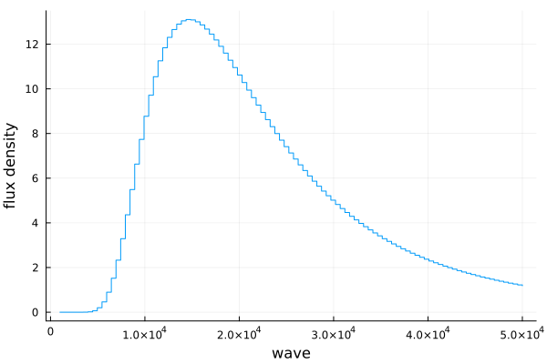

Spectrum
Here we will go over the different spectral types and how we use them.
Types
Spectra are defined as possible subtypes of AbstractSpectrum. You can use these directly for construction, or use the catch-all spectrum function, which is preferred.
Spectra.Spectrum — TypeSpectrum <: AbstractSpectrumA 1-dimensional spectrum stored as vectors of real numbers. The wavelengths are assumed to be in angstrom.
Constructors
Spectra.spectrum — Functionspectrum(wave, flux; kwds...)Construct a spectrum given the spectral wavelengths and fluxes. This will automatically dispatch the correct spectrum type given the shape and element type of the given flux. Any keyword arguments will be accessible from the spectrum as properties.
Examples
julia> wave = range(1e4, 4e4, length=1000);
julia> flux = 100 .* ones(size(wave));
julia> spec = spectrum(wave, flux)
Spectrum(Float64, Float64)
julia> spec = spectrum(wave, flux, name="Just Noise")
Spectrum(Float64, Float64)
name: Just Noise
julia> spec.name
"Just Noise"There is easy integration with Unitful.jl and its sub-projects and Measurements.jl
julia> using Unitful, UnitfulAstro, Measurements
julia> wave = range(1, 4, length=1000)u"μm";
julia> sigma = randn(size(wave));
julia> flux = (100 .± sigma)u"erg/cm^2/s/angstrom";
julia> spec = spectrum(wave, flux)
Spectrum(Quantity{Float64, 𝐋, Unitful.FreeUnits{(μm,), 𝐋, nothing}}, Quantity{Measurement{Float64}, 𝐌 𝐋^-1 𝐓^-3, Unitful.FreeUnits{(Å^-1, erg, cm^-2, s^-1), 𝐌 𝐋^-1 𝐓^-3, nothing}})For a multi-order spectrum, all orders must have the same length, so be sure to pad any ragged orders with NaN.
julia> wave = reshape(range(100, 1e4, length=1000), 100, 10)';
julia> flux = ones(10, 100) .* collect(1:10);
julia> spec = spectrum(wave, flux)
EchelleSpectrum(Float64, Float64)
# orders: 10Basic operations
For more advanced transformations, see Transformations
| Function |
|---|
Base.length(::AbstractSpectrum) |
Base.size(::AbstractSpectrum) |
Base.maximum(::AbstractSpectrum) |
Base.minimum(::AbstractSpectrum) |
Base.argmax(::AbstractSpectrum) |
Base.argmin(::AbstractSpectrum) |
Base.findmax(::AbstractSpectrum) |
Base.findmin(::AbstractSpectrum) |
Arithmetic
| Function |
|---|
+(::AbstractSpectrum, A) |
-(::AbstractSpectrum, A) |
*(::AbstractSpectrum, A) |
/(::AbstractSpectrum, A) |
Unitful helpers
Unitful.unit — FunctionUnitful.unit(::AbstractSpectrum)Get the units of a spectrum. Returns a tuple of the wavelength units and flux/sigma units
Examples
julia> using Unitful, UnitfulAstro
julia> wave = range(1e4, 3e4, length=1000);
julia> flux = wave .* 10 .+ randn(1000);
julia> spec = spectrum(wave * u"angstrom", flux * u"W/m^2/angstrom");
julia> w_unit, f_unit = unit(spec)
(Å, W Å^-1 m^-2)Unitful.ustrip — FunctionUnitful.ustrip(::AbstractSpectrum)Remove the units from a spectrum. Useful for processing spectra in tools that don't play nicely with Unitful.jl
Examples
julia> using Unitful, UnitfulAstro
julia> wave = range(1e4, 3e4, length=1000);
julia> flux = wave .* 10 .+ randn(1000);
julia> spec = spectrum(wave*u"angstrom", flux*u"W/m^2/angstrom")
Spectrum(Quantity{Float64, 𝐋, Unitful.FreeUnits{(Å,), 𝐋, nothing}}, Quantity{Float64, 𝐌 𝐋^-1 𝐓^-3, Unitful.FreeUnits{(Å^-1, m^-2, W), 𝐌 𝐋^-1 𝐓^-3, nothing}})
julia> ustrip(spec)
Spectrum(Float64, Float64)Plotting
We provide simple plotting recipes for spectra using Plots.jl
using Plots, Spectra
wave = range(1e3, 5e4, length=100)
spec = blackbody(wave, 2000)
plot(spec)GKS: cannot open display - headless operation mode active